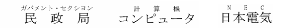
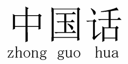
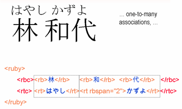
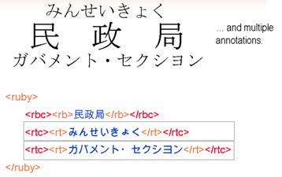
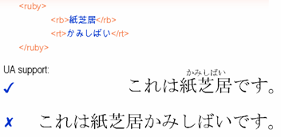
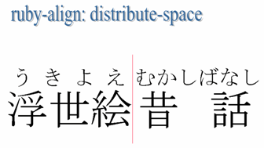
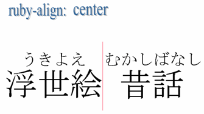
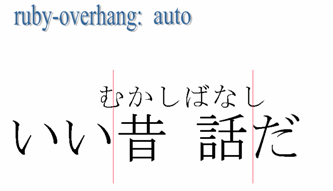

Intended audience:
шифровальщики XML и XHTML/HTML (используя редакторы или скрипты), разработчики скриптов (PHP, JSP, и т.д.), шифровальщики CSS, и
каждый кто хочет узнать как использовать аннотации ruby.
Warning: This article is only of historical interest, since the XHTML implementation of ruby markup has been succeeded by the model described in HTML5. The article is now well out of date.
For up-to-date information about how to work with ruby text see:
Ruby - маленькие аннотации, которые изображаются рядом с основным текстом. Это особенно полезно для Японского и другого Восточноазиатского
контента (ruby в Японской языке известна как Фуригана).
Спецификация аннотаций Ruby обеспечивает способ для отметки текста ruby, и принята в качестве модуля XHTML 1.1. В CSS3 ведется работа
над механизмами для поддержки стайлинга ruby текста.
В этой статье мы познакомим вас с основными механизмами, и обсудить современный уровень знаний в отношении поддержки ruby.
К сожалению, ruby не относится к гламурной женщине. Это более прозаический технический термин, который относится к
определенному типу аннотаций связанных с основным текстом. Название 'ruby' происходит от названия размера шрифта (около половины размера нормального 10
пиксельного шрифта), который используется Британскими верстальщиками.
Как правило, ruby используется в восточноазиатских скриптах для обеспечения фонетических транскрипций неясных символов, или символов с которыми читатель
может быть незнаком. Например, он широко используется в учебно-методических материалах и текстах для детей. Также иногда используются для передачи
информации о значении идеографических символов.
В Японском языке, где ruby называется Фуригана, фонетические транскрипции обычно появляются в Хирагане выше
горизонтального текста и справа от вертикального текста. Хотя ruby в японском языке часто представлена Хираганой, также иногда можно найти
аннотации написаны на Кандзи, Катакане (в частности, в Японском 'Манга' комиксе) и Латинском тексте.
Фуригана обычно появляется под горизонтальным текстом, и слева от вертикального текста в тех редких случаях, когда она используется, чтобы выразить
семантическую информацию.
Пример ruby в Японском языке.
Использование ruby аннотации для Японского языка не ограничено. На самом деле оно не обязательно ограничено и для любого из Азиатских скриптов. Ее можно использовать
как способ для аннотации для многих различных применений, таких как толкования языка и аннотаций.
Ниже на рисунке показаны примеры ruby текста, использующего Латинский язык, Кандзи, и Катакана для аннотации основного текста.

Любой символ действителен в ruby тексте и аннотациях.
Здесь показаны, Упрощенные Китайские символы, что ниже под каждым символом содержат аннотации, представленные пиньиньськимы транслитерациями.

Пример ruby в Упрощенном Китайском скрипте.
Такие аннотации в Традиционном Китайском обычно используют символы Бопомофо для определения произношения, и
скорее аннотации появляются над основным текстом, он располагается вертикально справа от каждого символа, независимо от того или основной текст располагается
вертикально или горизонтально.
Обратите внимание, как звуковые отметки появляются справа от столбца алфавитных символов Бопомофо.
Есть два аспекта при работе с текстом ruby: во-первых, обеспечить структурную информацию с помощью разметки, которая касается ruby и
ее основного текста, во-вторых направить презентационные (стайлинг) вопросы, например, длинный текст ruby перекрывает соседний основной текст, или краткий
ruby текст располагается по центру или выравнивается по левому краю с более длинным основным текстом и т.д. В этом разделе мы рассмотрим выражение структуры с помощью разметки.
Рекомендация W3C относительно Ruby Аннотаций (также доступны в Японском языке) описывает разметку которую можно использовать для поддержки ruby.
Спецификация определяет два варианта разметки ruby: простая разметка ruby и комплексная разметка ruby.
Простая разметка ruby связывает одно написание ruby текста с написанием основного текста.
Простая разметка ruby.
Пример выше показывает желаемый визуальный результат, а потом разметку, что должна это делать.
Вы хотите разместить предложение на Хирагане かみしばい поверх основного текста 紙芝居, которое является частью более длинного предложения. Аннотация обычно написана шрифтом небольшого размера.
Первый шаг - окружить как основной текст так и аннотацию разметкой ruby. Тогда, в ее рамках, добавьте
основной текст к элементу rb (основной элемент ruby), и аннотацию к элементу rt (текст ruby), в таком
порядке. Вот и все. Знает ли ваше клиентское приложение как отобразить эту разметку это уже другой вопрос, который мы рассмотрим позже.
Комплексная разметка ruby может установить более тесную связь между аннотациями и основным текстом, и может объединить два текста ruby с
одним основным текстом. Давайте посмотрим на это просто.
В то время как пример простой разметки ruby, что мы видели раньше связывает все написание текста аннотации со всем написанием основного текста,
комплексная разметка ruby позволяет указать, какой бит аннотации относится к какому символу в пределах одного элемента ruby .
Комплексная разметка ruby.
Приведенный выше пример показывает три символа в основном тексте 林和代 аннотированные для произношения
тремя строками はやし, かず и よ.
Каждая аннотация четко согласована с соответствующим символом.
Для разметки данных таким способом, что позволяет нам достичь этого мы используем два новых элемента rbc (основное вместилище
ruby), и rtc (вместилище текста ruby). В простейшем случае (как показано на слайде), каждый из этих элементов соответственно содержит
столько же элементов rb и rt. Таким образом, элемент rb и его соответствующий элемент rt могут эффективно использоваться вместе в паре.
Это аналогично использованию элементов td внутри элементов tr в HTML таблицах.
Разметка для этого, будет такой которая показана на слайде:
Есть правило: простая ruby не имеет rbc или rtc элементов; комплексная ruby имеет rtc и rtc элементы.
Ассоциации one-to-many. Мы можем узнать немного больше об этом. На диаграмме ниже мы используем
тот же пример, но аннотации разделены только на две надписи: первая выше фамилия, 林, и другая
над заданным именем 和代. Иными словами, мы связывали одно написание аннотаций с несколькими написаниями основных
символов.

Ассоциации one-to-many с комплексной разметкой ruby.
Это достигается путем применения метода похожего на тот, что использовался при создании таблиц в HTML. Второй и третий элементы rt становятся одним целым, при добавлении атрибута rbspan что в данном случае имеет значение №2.
Несколько аннотаций. В нашем последнем примере комплексной аннотации ruby мы показываем как одновременно связать основной
текст с 2 аннотациями. Ниже, пример в верхней части иллюстрации показывает это для Японского языка, где одна аннотация написана над
основным текстом, а другая ниже текста.

Несколько аннотаций с комплексной разметкой ruby.
На данном примере мы придерживаемся этого просто используя только одну пару rb и rt. Что здесь нового -
это то, что мы имеем два элемента rtc внутри элемента ruby (но по-прежнему только один элемент rbc).
Спецификация Аннотации Ruby не обеспечивает нормативный текст о размещении аннотаций, оставляя это для реализации.
Однако, есть некоторые информативные предложения для клиентских приложений относительно стилизации по умолчанию. (Есть также полезные свойства стиля, указанные в
CSS3 Модуле Ruby, которые мы обсудим в следующем разделе.)
Если реализация будет следовать советам в спецификации, то вы можете ожидать, что размер шрифта аннотации быть около половины
высоты основного текста, и для аннотации в простой ruby будет появляться перед основным текстом. В этом случае, 'перед',
это технический термин, используемый чтобы обратиться к области выше нормальной линии горизонтального текста и области справа от линии вертикального текста чьи
столбце развиваются справа налево (например вертикальный Китайский, Японский и Корейский текст). Вы также рассчитывайте на то, что текст ruby иметь такое же направление
что и основной текст (то есть вертикальное или горизонтальное). Если есть несколько аннотаций для одного текста, то вы можете ожидать, что первая появиться перед
текстом, и вторая после, то есть ниже горизонтального текста и слева от вертикального текста чьи столбцы развиваются
справа налево.
'Перед' означает слева от строки вертикального Монгольского текста, с тех пор как столбцы развиваются
слева направо.
Визуальная иллюстрация 'перед' и 'после'.
Это, вероятно, действительно для получения ожидаемых результатов для текста на Японском языке, но в других скриптах ожидаемое поведение может отличаться.
Спецификация отмечает, что, например, Пиньинь ruby обычно появляется после основного текста на Китайском языке. Нужна будет дополнительная поддержка стилей, чтобы
достичь этого в простой ruby.
Кроме того, спецификация обращает ваше внимание на тот факт, что Бопомофо ruby в Китайском тексте обычно появляется справа
от символов в горизонтальном тексте, но не дает советы как это изменить.
Примечание: Информацию о форматировании ruby в Японском контенте можно найти в JIS X 4051 ("Правила форматирования
Японских документов" (日本語文書の組版方法) JIS X 4051:2004, Японская Ассоциация Стандартов, 2004 (в Японском языке)).
Мы также увидим (потом) что есть функции отступления определеные в стандарте, которые позволяют последовательно отображать основной текст и ruby
на клиентских приложениях, которые еще не обрабатывают разметку.
Мы обсуждали представление, а есть еще одна часть разметки которую мы еще не исследовали. Если клиентское приложение не понимает
как отобразить текст ruby, оно просто отобразит основной текст, который сразу следует после текста ruby, используя тот же размер шрифта (как показано на слайде).
Это запутает пользователя.
Элемент rp (круглые скобки ruby) позволяет указать символы которые появятся вокруг простого текста ruby, если
клиентское приложение не поддерживает представление ruby. Скорее всего, вы захотите использовать здесь скобки, но здесь любой доступны символ или последовательность
символов.

Ruby без rp разметки.
Если добавить элементы rp перед и после текста ruby как в этом примере, то если клиентское приложение не в состоянии будет распознать
текст ruby он появится в скобках, что является более приемлемым. Клиентские приложения не знают как обработать ruby автоматически будут прятать
контент элементов rp поскольку они показывают ruby в соответствующем месте.
CSS3 Ruby Модуль вводит ряд свойств для описания размещения текста ruby по отношению к основному тексту. Обратите внимание, что
эта спецификация еще не завершена, так что этот раздел будет стремиться дать вам представление о том, что будет возможно с помощью этой спецификации, а не
исчерпывающе пересчитывает все возможности.
Мы использовать слова 'перед' и 'после' с тем же значением как описано ранее.
Есть три основных свойства: ruby-position, ruby-overhang, и ruby-align.
Темы, которые мы не будем обсуждать здесь, включают:
свойство ruby-span
небольшое количество значений свойства
модель окна ruby и набор значений связанных с свойством отображения, которое можно использовать, чтобы связать
произвольную XML разметку с конструкциями ruby определенны в спецификации Аннотации Ruby.
Первое свойство, ruby-position, позволяет указать где должна появиться ruby в отношении основного
текста.
ruby-position может иметь следующие свойства: before (перед), after (после), inline (встроенная), и right (справа). Вы можете применить этот стиль к элементу ruby.
Для размещения текста ruby выше горизонтального основного текста или справа от вертикального текста, используйте ruby-position: before. Это
поведение по умолчанию.
Ruby-position: before
Для размещения текста ruby ниже горизонтального основного текста или слева от вертикального текста, используйте ruby-position: after.
Ruby-position: after
Например, если ваш документ содержит Китайский текст с Пиньинь ruby, и вы хотите чтобы вся ruby появлялась ниже основного текста, вы должны
включить следующее в ваши CSS назначения:
ruby { ruby-position: after; }
Если вы хотите чтобы текст ruby появлялся встроенным, то вы должны использовать ruby-position: inline. Обратите внимание, что из-за ошибок,
это не объясняется в текущей версии спецификации CSS3 Ruby.
Ruby-position: inline
Скобки на рисунке выше должны быть обеспечены в разметке rp.
Свойство ruby-align направляет относительное выравнивание ruby и основного текста когда один длиннее чем
другой. В основном эффект применяется к тому который короче или текст ruby или основной текст. Это принимает следующие значения: auto, left, start, center, end, right, distribute-letter, distribute-space, и line-edge.
Примечание: два отдельных слова выбраны для этих примеров, одно слева, одно справа от вертикальной линии.
Эта линия применяется только для отделения примеров на слайдах, и не являются частью стайлинга.
Если вы применяете auto поведение остается до реализации, но рекомендуемое поведение (описано стандартом
JIS 4051) - это применять distribute-letter к Китайским, Японским или Корейским символам написанным в полную ширину, но применять center к другим. Это поведение по умолчанию.
ruby-align: distribute-letter распространяется на более короткий текст применяя расстояние между символами так что начальные
края первого ruby и основного символа выравниваются, как конечные края последнего ruby и основных символов.
Ruby-align: distribute-letter
ruby-align: distribute-space делает то же самое, что и ruby-align: distribute-letter, но небольшое пространство остается
перед первым и после последнего символа.

Ruby-align: distribute-space
ruby-align: center выравнивает центры ruby и основного текста.

Ruby-align: center
ruby-align: left и ruby-align: start являются синонимами, и результатом является выравнивание начала как ruby
так и основного текста.
Ruby-align: left / start
ruby-align: right и ruby-align: end являются синонимами, и результатом является выравнивание конца как ruby
так и основного текста.
Если текст ruby шире чем основной текст, то вы можете указать выступает ли он за любой окружающий основной текст или нет, и на
сколько именно он выступает, используя свойство ruby-overhang. Это принимает следующие значения: auto, start, end, и none.
Чтобы разрешить тексту ruby перекрыть окружающие основные символы с обеих сторон используйте ruby-overhang: auto. Это зависит только от
принятие решения сколько перекрытий позволить, но стандарт JIS 4051 рекомендует максимальную ширину символа ruby. Реализация
также может применить это избирательно в зависимости от типа символа - для этого есть правила в стандарте JIS.
Это значение по умолчанию.

ruby-overhang: start только позволяет тексту ruby выступать за предыдущие основные символы.
ruby-overhang: end только позволяет тексту ruby выступать за следующие основные символы.
Спецификация разметки Аннотации Ruby в Мае 2001 года стала Рекомендацией W3C, так что это завершенная работа.
Разметка аннотации ruby не действует в HTML 4 и XHTML 1.0 документах. Тем не менее, спецификация является одним из модулей, составляющих
XHTML 1.1. Также ожидается, что она будет одним из модулей в XHTML 2.0, которая находится в разработке.
Работа делалась Рабочей Группой Набора Интернационализированных Тэгов
(ITS) в W3C чтобы сделать словарь разметки который разработчики схем могли бы использовать для поддержки интернационализации и локализации и скорее всего,
включить разметку ruby.
14 мая 2003 модуль CSS3 Ruby был перемещен к кандидатским Рекомендациям, но еще нуждается в редактирование. Как только текст будет
готов надо будет найти некоторые реализации, создать и применить тесты для перемещения спецификации в Предлагаемый и затем полностью
Рекомендованный статус.
Спецификация разметки аннотации ruby определяет два уровня соответствия. Реализации могут поддерживать только простую разметку ruby, или
одновременно простую и комплексную разметку.
Internet Explorer 5+ поддерживает простую разметку ruby в различных типах документов. Хотя фактическая реализация является не совсем
тем самым что и спецификация, она до сих пор делает правильные вещи из стандартной разметкой. Это означает, что при представлении он помещает текст ruby над основным текстом и
удаляет любые символы в элементах rp. Так как эта разметка не является стандартом для HTML или XHTML 1.0, мы не можем рекомендовать ее вам
для использования для этих форматов (ваши странички больше не будут проверяться). Тем не менее, простая ruby также поддерживается в XHTML 1.1 документах, где ее использование есть действительным.
W3C браузер Amaya поддерживает отображение как простой, так и (в значительной степени) комплексной ruby.
Существует расширение для таких браузеров, как: Mozilla, Netscape 7 и Firefox с поддержкой как простой так и комплексной ruby, включая rbspan, для страниц, которые обслуживаются как "application/xhtml+xml" (а не как "text/html"). Тем не менее, место загрузки предупреждает, что:
"Иногда это расширение вызывает ошибку, когда вы показываете всплывающие меню, загружаете веб-страницы, или работаете с вкладками, так как оно вторгается в
операции связанные с загрузкой страниц. Пожалуйста, не используйте его, в случае если вы хотите использовать стабильный браузер"
Masayasu Ishikawa также написал статью, что предлагает некоторые обходные пути для
подачи простой ruby в Mozilla/Firefox, Safari и Opera 8-й версии.
Internet Explorer также обеспечивает очень ограниченную поддержку для некоторых свойств CSS3 Модуля Ruby, но не всегда использует то же
значение свойства что указанное в спецификации. В противном случае сейчас вам вряд ли удастся найти поддержку для этих свойств - что неудивительно,
так как спецификация все еще не является рекомендацией.